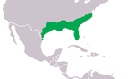
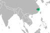
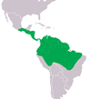
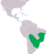
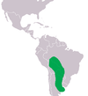
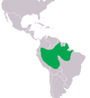
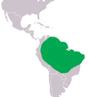
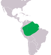

Classificação científica
- Reino: Animalia
- Filo: Chordata
- Classe: Reptilia
- Ordem: Crocodylia
- Família: Alligatoridae
Subfamílias
- Alligatorinae
- Caimaninae
Jacaré, também chamado aligátor e caimão, são crocodilianos da família Alligatoridae, sendo muito parecidos com os crocodilos, dos quais se distinguem pela cabeça mais curta e larga e pela presença de membranas interdigitais nos polegares das patas traseiras. Diferenciam-se dos crocodilos ainda com relação à dentição, o quarto dente canino da mandíbula inferior encaixa num furo da mandíbula superior, enquanto que nos crocodilos sobressai para fora, quando têm a boca fechada. O tamanho de um jacaré pode variar de 1,2 metros (jacaré-anão) até 5,5 metros (jacaré-açu), podendo pesar de seis a seiscentos quilos.
Os jacarés habitam as Américas, tendo desaparecido da Europa no Plioceno. Na América do Norte, ocorre, somente, o gênero Alligator.
- Etimologia
- Características
O termo "jacaré" se origina do termo tupi "îakaré", ou "jaeça-karé", que significa "aquele que olha de lado". O termo "aligátor" se origina do termo inglês "alligator", que provavelmente é uma forma anglicanizada do espanhol "el lagarto". Algumas variações antigas da grafia em inglês incluem "allagarta" e "alagarto". Já o termo "caimão" se origina do termo taino "kaiman". Caimão é um nome comum a diversos jacarés americanos do gênero Caiman.
Os jacarés se diferenciam dos crocodilos por possuírem uma cabeça mais curta e mais larga, com focinhos mais avantajados. Jacarés ingerem carne e peixe. O menor jacaré é o jacaré-anão, cujo comprimento varia entre 1,2 e 1,4 metros e pesa de 6 a 7 quilogramas. O aligátor-americano tem um tamanho médio de 3 a 4,6 metros, chegando até 5,3 metros e 400 quilogramas. O tamanho médio do jacaré-açu é de 2,8 a 4,2 metros, podendo alcançar os 6 metros e mais de 400 quilogramas.
Lista de espécies atuais de jacarés
| Espécie | Distribuição Geográfica | Estado na IUCN | Descrição |
|---|---|---|---|
Jacaré-americano Alligator mississippiensis |
 | Pouco preocupante | Espécie amplamente distribuída pelo sudeste dos Estados Unidos. Machos medem no máximo 4,5 m de comprimento e as fêmeas medem até 3 m. Habita pântanos, lagos e banhados, ocorrendo em menor densidade ao longo de rios. São capazes de sobreviver a temperaturas abaixo de zero. |
Jacaré-da-china Alligator sinensis |
 | Criticamente em perigo | Espécie de pequeno porte medindo até 2 m de comprimento. Historicamente,era amplamente distribuído pela bacia do rio Yangtzé, no sudeste da China. Atualmente, ocorre em uma região restrita na província de Anhui sendo um dos crocodilianos mais ameaçados atualmente. Habita regiões de clima temperado e hiberna para sobreviver a invernos rigorosos. |
Jacaretinga Caiman crocodilus |
 | Pouco preocupante | A jacaretinga apresenta a mais ampla distribuição geográfica entre os crocodilianos do Novo Mundo, ocorrendo desde o sul do México até o norte do Brasil e do Peru. É uma espécie de porte médio, com machos podendo medir até 2,7 m de comprimento. Muito adaptável, habita qualquer tipo de ambiente associado à água. |
Jacaré-de-papo-amarelo Caiman latirostris |
 | Pouco preocupante | É amplamente distribuído pelo sudeste da América do Sul, ocorrendo em qualquer ecossistema associado à água nas bacias dos rios Paraná, Paraguai, Uruguai e São Francisco, sendo comum desde o extremo leste do Brasil até o Uruguai. Também ocorre em ecossistemas costeiros, como mangues. Apresenta porte médio, podendo medir até 3,5 m de comprimento, embora animais maiores de 2 m sejam raros na natureza. |
Jacaré-do-pantanal Caiman yacare |
 | Pouco preocupante | Ocorre do norte da Bolívia e oeste do Brasil até o norte da Argentina, sendo encontrado em ecossistemas associados às bacias dos rios Guaporé, Madeira, Paraguai e Paraná, sendo comum no Pantanal. É uma espécie semelhante morfologicamente à jacaretinga e tolerante à pressão de caça. |
Jacaré-açu Melanosuchus niger |
 | Dependente de conservação | É a maior espécie de jacaré, podendo medir até 5 m de comprimento, sendo amplamente distribuído pela bacia do rio Amazonas e habitando qualquer ecossistema associado a água. Já esteve muito ameaçado de extinção, tendo sua população aumentado nas últimas décadas, principalmente no Brasil, por conta da proibição da caça. |
Jacaré-anão Paleosuchus palpebrosus |
 | Pouco preocupante | Espécie de pequeno porte que ocorre nas bacias dos rios Amazonas e Orinoco no norte e entre as bacias dos rios Paraguai e Paraná e do São Francisco. É considerado o menor crocodiliano, dificilmente ultrapassando 1,6 m de comprimento, apesar de registros de até 2 m de comprimento. |
Jacaré-coroa Paleosuchus trigonatus |
 | Pouco preocupante | Espécie de pequeno porte facilmente confundida com o jacaré-anão, mas tamanho maior, podendo medir até 2,3 metros de comprimento. Sua distribuição geográfica também é mais restrita, não ultrapassando as bacias dos rios Amazonas e Orinoco. Apesar de ser mais comumente encontrado em áreas densamente florestadas, é uma espécie resistente a alterações feitas pelo homem. Assim como o jacaré-anão, é uma espécie cuja biologia foi pouco estudada. |